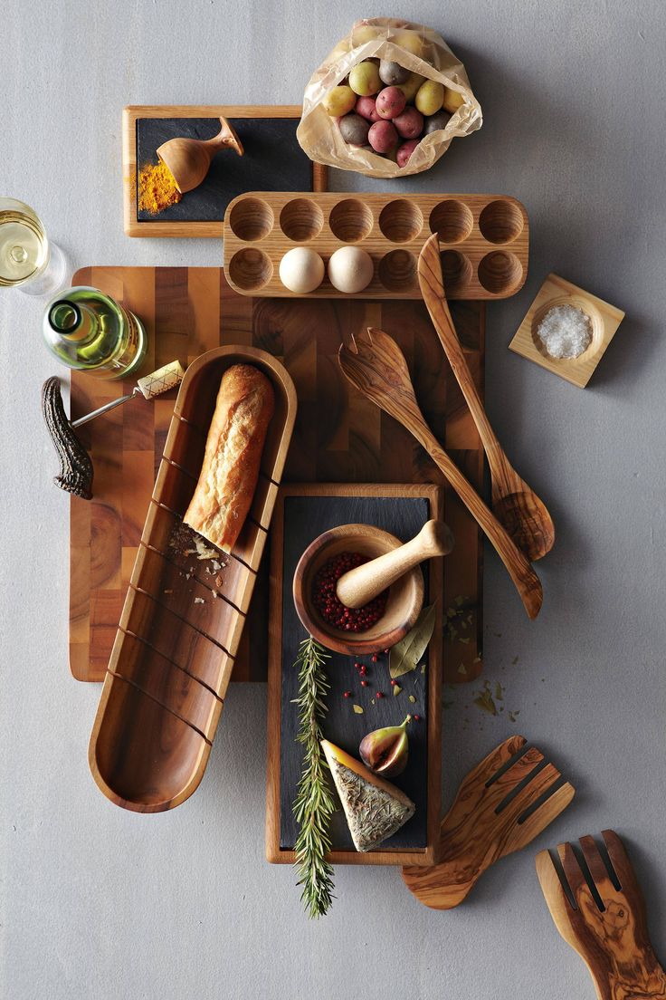
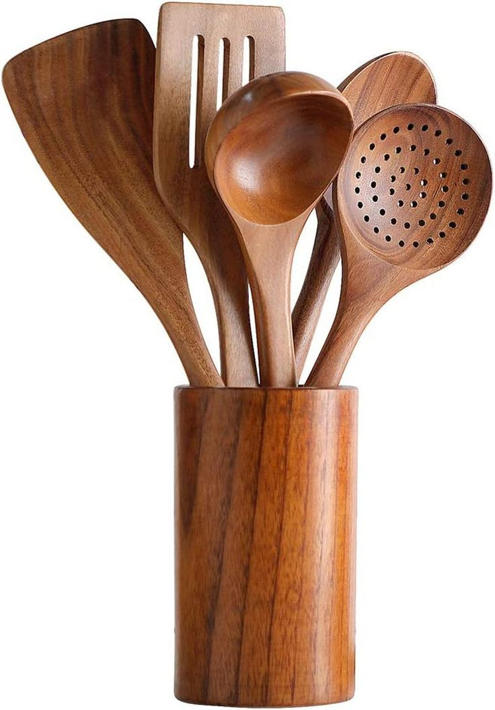
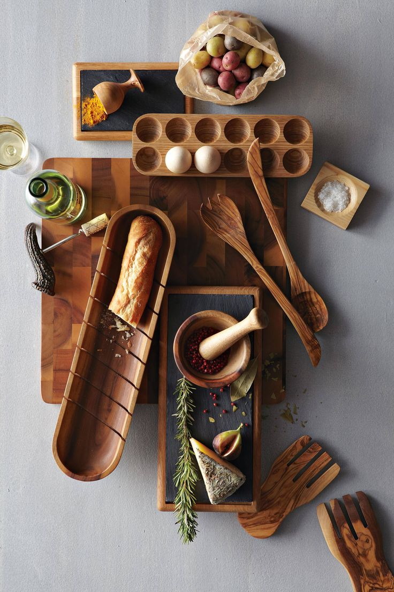
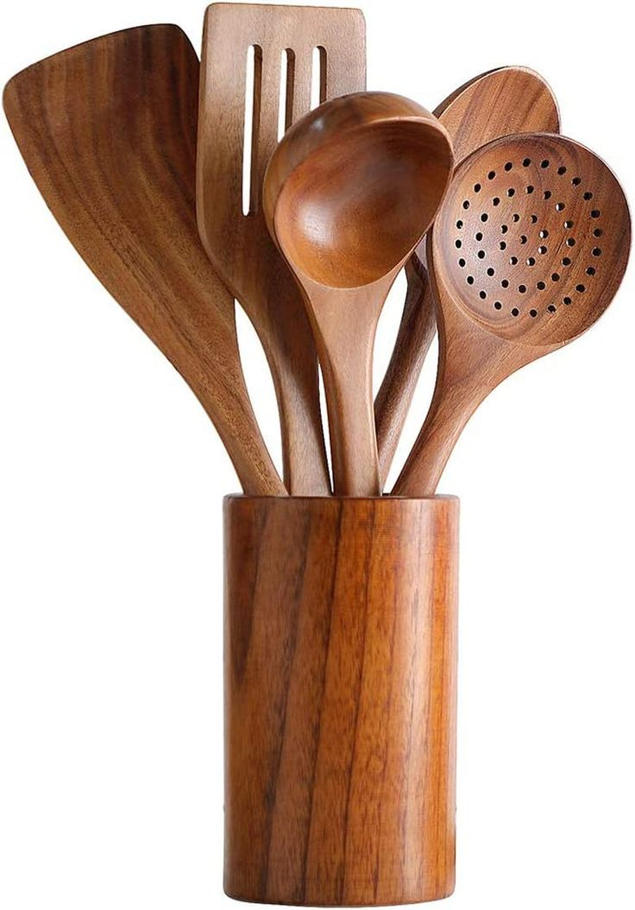

Green Living Tips(sustainable living practices)


Eco-Friendly Products(eco-friendly lifestyle choices)
Kitchen
 



Garden


Personal care


reducing environmental impact
What is environmental impact?
Environmental impact refers to the effect that human activities have on the natural world. It encompasses the changes, both positive and negative, that our actions cause in ecosystems, biodiversity, air and water quality, and the overall health of the planet. These impacts can be direct, such as pollution from factories or deforestation, or indirect, like the carbon emissions contributing to climate change. Understanding environmental impact is crucial for making informed decisions about how we interact with our surroundings and for fostering sustainable practices that minimize harm to the environment.
What can I do?
To minimize environmental impact, individuals can adopt various sustainable practices in their daily lives. Simple actions, such as reducing energy consumption, conserving water, and minimizing waste generation, can collectively make a significant difference. Choosing eco-friendly transportation options, such as walking, cycling, or using public transit, helps reduce carbon emissions. Additionally, supporting environmentally responsible products and businesses encourages sustainable production and consumption patterns. By making conscious choices in our consumption habits, we can contribute to preserving the natural world for future generations.
Fun facts(Did you know?)
Discover more fun facts around you